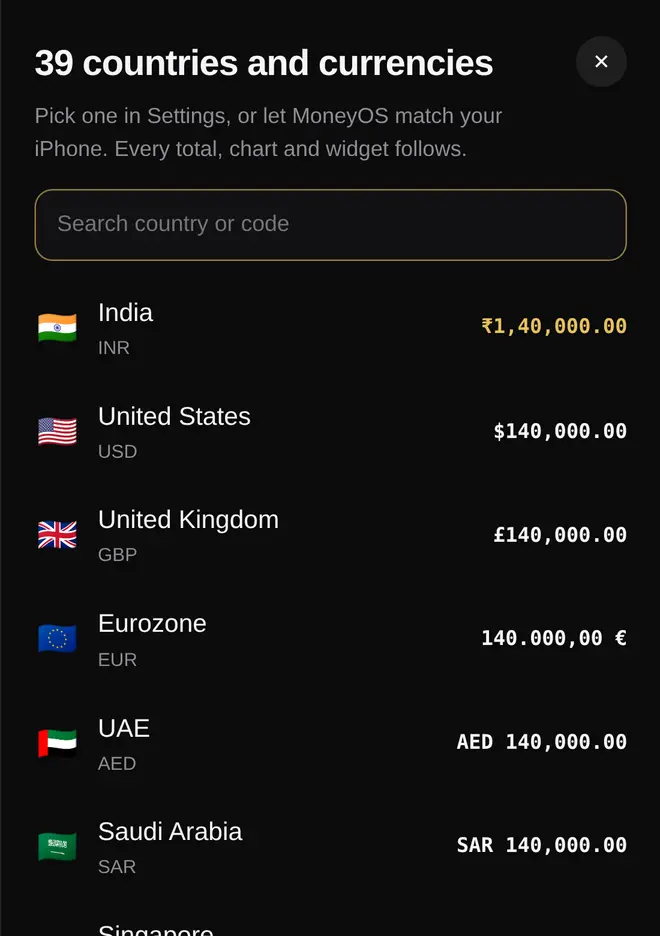
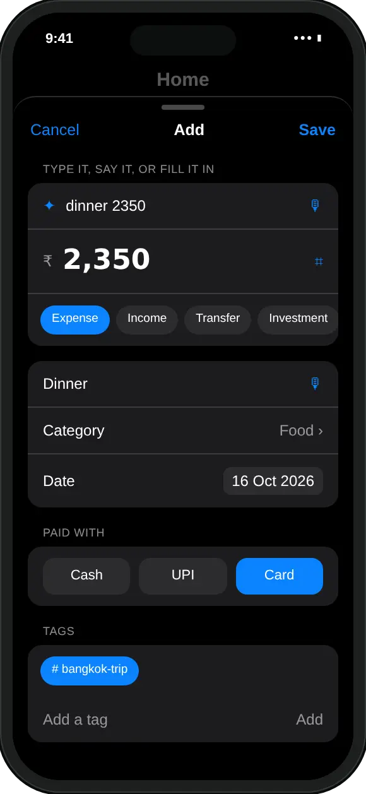

How does MoneyOS handle different currencies?
It keeps one currency for the whole app. You choose it from 39 in Settings, Currency & format, or let it match your iPhone, and every total, chart, icon and widget follows.
The list runs from the Indian rupee, US dollar, pound and euro to the UAE dirham, Saudi riyal, Singapore dollar, yen and many more. You can search it by country or by currency code, and each row shows how an amount will look before you pick it.
One currency at a time is a deliberate choice. Your monthly limit, your safe-to-spend amount and your month's total only make sense when every entry is in the same money. And because MoneyOS makes no network calls, it never fetches exchange rates in the background.

What currency should I log in when I travel abroad?
Your home currency. Log what each spend actually cost you in rupees, and the trip lands in the same budget as the rest of your month.
- Card or forex card. Use the rupee amount your bank charges, from the card app or the statement. If your bank adds a foreign transaction fee as a separate line, log that too.
- Cash. Work out the rate once, from what you paid when you exchanged money. If 1,000 baht cost you ₹2,500, every baht is ₹2.50, so a 400 baht meal is ₹1,000. The cash guide has quick ways to log it.
Watch out for one thing. You can type amounts with any symbol: $40, USD 12.50 and Rs.200 all work. But the symbol is only read past, and the number is saved in the app's currency. With MoneyOS in rupees, typing $40 saves ₹40. Convert first, then type the rupee amount.
How do I keep all my trip spending together?
Give every trip expense the same tag, then filter your list by that tag. Four steps:
- Log the expense in rupees. Tap Add and type it the way you normally would, with the rupee amount it cost you, for example dinner 2350.
- Add a trip tag. Under Tags, type a name such as bangkok-trip and tap Add. Tags are saved in lower case, with hyphens between words.
- Tag every trip entry. Add the same tag to each expense from the trip: flights, hotel, food, cabs, shopping.
- Filter by the tag. On Home, open the Tag filter above your transactions and pick the trip tag. Only those entries for that month are listed.
The list shows one month at a time, so a trip that crosses the end of a month shows up in both months. The Travel category is there too, for flights, hotels and cabs.

What if I move abroad or get paid in another currency?
Switch the app's currency in Settings, Currency & format. If you already have entries, MoneyOS asks what to do with them before anything changes.
- Change the symbol only. Every number stays the same and only the symbol changes. This is for amounts that were already in the new currency, or a wrong pick at the start.
- Convert the amounts. Type a rate, such as 1 USD = 85 INR, and every amount is worked out at it. Your salary preset, the net worth items you entered by hand and your combined card limits are converted at the same rate.
- Cancel. Nothing changes and the old currency stays.
MoneyOS never fetches the rate for you, so use the one from your bank or a currency converter. If you use iCloud sync on two devices, switch on one and the other offers to follow. Read more about what stays on your phone, or why MoneyOS was built this way.
Frequently asked questions
Can MoneyOS track two currencies at the same time?
No. It records and totals everything in one currency at a time, the one you pick in Settings, Currency & format. On a trip, log what each spend cost you in your home currency.
Which currencies does MoneyOS support?
39, including the Indian rupee, US dollar, British pound, euro, UAE dirham, Saudi riyal, Singapore dollar and Japanese yen. You can search the list by country or by currency code, or let the app match your iPhone.
If I type $40, does MoneyOS convert it?
No. The symbol is ignored and only the number is kept, in the app's currency. With MoneyOS set to rupees, $40 is saved as ₹40, so convert the amount before you type it.
Does MoneyOS fetch exchange rates?
No. MoneyOS makes no network calls, so it never looks up rates. If you convert your entries after switching currency, you type the rate yourself, from your bank or a currency converter.
Will changing the currency change my old entries?
Only if you choose. When entries already exist, MoneyOS asks whether to change only the symbol or convert the amounts at your rate. Cancel keeps the old currency.
Is MoneyOS free?
Yes. The whole app is free, with no subscription, no ads and no in-app purchases. There is no account and no bank login.